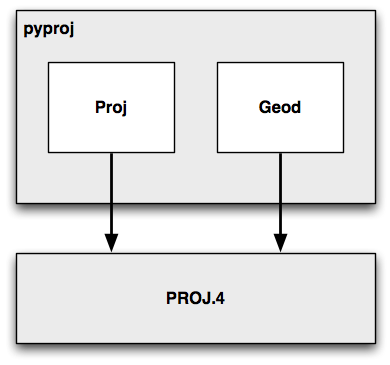

处理投影#
Dealing with projections
处理地理空间数据的挑战之一是，使用制图投影将大地位置（地球表面上的点）映射到二维笛卡尔平面中。我们在上一章中研究了投影：每当您有一些地理空间数据时，您都需要知道该数据使用哪种投影。您还需要知道数据所采用的基准（地球形状的模型）。
处理地理空间数据时的一个常见挑战是您必须将数据从一个投影/基准转换为另一个。幸运的是，有一个 Python 库 pyproj 可以轻松完成这项任务。
One of the challenges of working with geospatial data is that geodetic locations (points on the Earth’s surface) are mapped into a two-dimensional Cartesian plane using a cartographic projection. We looked at projections in the previous chapter: whenever you have some geospatial data, you need to know which projection that data uses. You also need to know the datum (model of the Earth’s shape) assumed by the data.
A common challenge when dealing with geospatial data is that you have to convert data from one projection/datum to another. Fortunately, there is a Python library pyproj which makes this task easy.
pyproj#
pyproj 是另一个名为 PROJ.4 的库的 Python“包装器”。 “PROJ.4”是 PROJ 库第 4 版的缩写。 PROJ 最初由美国地质调查局编写，用于处理地图投影，多年来已广泛应用于地理空间软件。 pyproj 库使您可以从 Python 程序中访问 PROJ.4 的功能。
pyproj is a Python “wrapper” around another library called PROJ.4. “PROJ.4” is an abbreviation for Version 4 of the PROJ library. PROJ was originally written by the US Geological Survey for dealing with map projections, and has been widely used in geospatial software for many years. The pyproj library makes it possible to access the functionality of PROJ.4 from within your Python programs.
pyproj
设计#
Design
pyproj 库由以下部分组成：
{kind=link}
pyproj 仅包含两个类：Proj 和 Geod。 Proj 负责在经纬度坐标与原生地图 (x, y) 坐标之间进行转换，反之亦然。 Geod 用于执行各种大圆距离和角度计算。
这两个类均构建在 PROJ.4 库之上。 接下来，我们将深入了解这两个类的功能。
The pyproj library consists of the following pieces:
pyproj consists of just two classes: Proj and Geod. Proj converts from longitude and latitude values to native map (x, y) coordinates, and vice versa. Geod performs various Great Circle distance and angle calculations. Both are built on top of the PROJ.4 library. Let’s take a closer look at these two classes.
Proj#
Proj
Proj 是一个制图投影转换类，它允许你在地理坐标（即纬度和经度值）与投影坐标（默认以米为单位的 x, y 值）之间进行转换。
创建新的 Proj 实例时，需要指定投影方式、基准面（datum）及其他参数，以描述如何执行投影。例如，若要使用横轴墨卡托（Transverse Mercator）投影和 WGS84 椭球体，可以这样做:
projection = pyproj.Proj(proj='tmerc', ellps='WGS84')
创建 Proj 实例后，可以使用它将纬度和经度转换为指定投影的 (x, y) 坐标。同样，也可以执行逆投影——即从 (x, y) 坐标转换回纬度和经度。
transform() 函数可用于直接在不同投影之间转换坐标。只需提供起始坐标、描述起始坐标投影的 Proj 对象以及目标投影即可。这在单个或批量转换坐标时非常有用。
Proj is a cartographic transformation class, allowing you to convert geographic coordinates (that is, latitude and longitude values) into cartographic coordinates (x, y values, by default in meters) and vice versa.
When you create a new Proj instance, you specify the projection, datum, and other values used to describe how the projection is to be done. For example, to use the Transverse Mercator projection and the WGS84 ellipsoid, you would do the following:
projection = pyproj.Proj(proj='tmerc', ellps='WGS84')
Once you have created a Proj instance, you can use it to convert a latitude and longitude to an (x, y) coordinate using the given projection. You can also use it to do an inverse projection—that is, converting from an (x, y) coordinate back into a latitude and longitude value again.
The helpful transform() function can be used to directly convert coordinates from one projection to another. You simply provide the starting coordinates, the Proj object that describes the starting coordinates’ projection, and the desired ending projection. This can be very useful when converting coordinates, either singly or en masse.
Geod#
Geod
Geod 是一个大地测量计算类，允许执行各种大圆计算。在之前的内容中，我们已经介绍了大圆计算，特别是在精确计算地球表面两点间的距离时。Geod 类不仅可以计算距离，还提供了以下功能：
fwd() 方法接受起始点、方位角（角度方向）和距离，并返回终点及反方位角（从终点返回起点的角度）：
{kind=link}
inv() 方法接受两个坐标点，并返回正向和反向的方位角，以及它们之间的距离：
{kind=link}
npts() 方法计算沿大地测量线（从起点到终点）等距分布的多个点的坐标：
{kind=link}
创建 Geod 对象时，需要指定用于大地测量计算的椭球体。椭球体可以从多个预定义选项中选择，或者直接输入椭球体参数（如赤道半径、极半径等）。
Geod is a geodetic computation class, which allows you to perform various Great Circle calculations. We looked at Great Circle calculations earlier, when considering how to accurately calculate the distance between two points on the Earth’s surface. The Geod class, however, can do more than this:
The fwd() method takes a starting point, an azimuth (angular direction) and a distance, and returns the ending point and the back azimuth (the angle from the end point back to the start point again):
The inv() method takes two coordinates and returns the forward and back azimuth as well as the distance between them:
The npts() method calculates the coordinates of a number of points spaced equidistantly along a geodesic line running from the start to the end point:
When you create a new Geod object, you specify the ellipsoid to use when performing the geodetic calculations. The ellipsoid can be selected from a number of predefined ellipsoids, or you can enter the parameters for the ellipsoid (equatorial radius, polar radius, and so on) directly.
示例代码#
Example code
以下示例从 UTM 第 17 带的坐标开始。 使用两个 Proj 对象分别定义 UTM 第 17 带投影和经纬度投影， 然后将该坐标转换为经纬度值：
import pyproj
UTM_X = 565718.5235
UTM_Y = 3980998.9244
srcProj = pyproj.Proj(proj="utm", zone="11", ellps="clrk66", units="m")
dstProj = pyproj.Proj(proj="longlat", ellps="WGS84", datum="WGS84")
long, lat = pyproj.transform(srcProj, dstProj, UTM_X, UTM_Y)
print "UTM 第 11 带坐标 (%0.4f, %0.4f) = %0.4f, %0.4f" \
% (UTM_X, UTM_Y, lat, long)
接着，让我们使用 Geod 对象， 计算从该经纬度坐标出发，向东北方向 10 公里处的另一个点：
angle = 315 # 315 度 = 东北方向
distance = 10000
geod = pyproj.Geod(ellps="WGS84")
long2, lat2, invAngle = geod.fwd(long, lat, angle, distance)
print "%0.4f, %0.4f 是 %0.4f, %0.4f 以东北方向 10 公里处的点" \
% (lat2, long2, lat, long)
The following example starts with a location specified using UTM zone 17 coordinates. Using two Proj objects to define the UTM Zone 17 and lat/long projections, it translates this location’s coordinates into latitude and longitude values:
import pyproj
UTM_X = 565718.5235
UTM_Y = 3980998.9244
srcProj = pyproj.Proj(proj="utm", zone="11", ellps="clrk66", units="m")
dstProj = pyproj.Proj(proj="longlat", ellps="WGS84", datum="WGS84")
long,lat = pyproj.transform(srcProj, dstProj, UTM_X, UTM_Y)
print "UTM zone 11 coordinate (%0.4f, %0.4f) = %0.4f, %0.4f" \
% (UTM_X, UTM_Y, lat, long)
Continuing on with this example, let’s take the calculated lat/long values and, using a Geod object, calculate another point 10 kilometers northeast of that location:
angle = 315 # 315 degrees = northeast.
distance = 10000
geod = pyproj.Geod(ellps="WGS84")
long2,lat2,invAngle = geod.fwd(long, lat, angle, distance)
print "%0.4f, %0.4f is 10km northeast of %0.4f, %0.4f" \
% (lat2, long2, lat, long)
文档#
Documentation
pyproj 官网提供的文档，以及随源码提供的 docs 目录中的文档，都非常优秀。 它们详细描述了各种类和方法的用法、功能及所需参数。 然而，在创建 Proj 对象时所需的参数方面，文档却相对较为简略。 正如文档所述：
Proj 类实例使用 proj 投影控制参数的键/值对进行初始化。 这些键/值对可以以字典形式传递，也可以作为关键字参数， 还可以使用 proj4 字符串（兼容 proj 命令）传递。
文档确实提供了一个链接，列出了多种标准地图投影及其相关参数， 但要真正理解这些参数的含义，通常需要深入阅读 PROJ 文档。 PROJ 文档内容密集，且较为晦涩，尤其是因为其主文档基于 PROJ 版本 3， 而后续版本的更改则以附录的形式添加。 尝试理清所有这些内容可能会颇具挑战性。
幸运的是，在大多数情况下，你并不需要查阅 PROJ 文档。 当使用 GDAL 或 OGR 处理地理空间数据时， 可以轻松提取投影信息，格式为 “proj4 字符串”， 该字符串可以直接传递给 Proj 初始化函数。 如果需要直接指定投影，通常可以通过 proj=”…” 和 ellps=”…” 参数 分别选择投影类型和椭球体。 但如果想要进行更深入的设置，则需要参考 PROJ 文档以获取更多细节。
备注
想要了解更多关于 PROJ 的信息，并阅读其原始文档， 可访问以下网址： http://trac.osgeo.org/proj
The documentation available on the pyproj website, and in the docs directory provided with the source code, is excellent as far as it goes. It describes how to use the various classes and methods, what they do and what parameters are required. However, the documentation is rather sparse when it comes to the parameters used when creating a new Proj object. As the documentation says:
A Proj class instance is initialized with proj map projection control parameter key/ value pairs. The key/value pairs can either be passed in a dictionary, or as keyword arguments, or as a proj4 string (compatible with the proj command).
The documentation does provide a link to a website listing a number of standard map projections and their associated parameters, but understanding what these parameters mean generally requires you to delve into the PROJ documentation itself. The documentation for PROJ is dense and confusing, even more so because the main manual is written for PROJ Version 3, with addendums for later versions. Attempting to make sense of all this can be quite challenging.
Fortunately, in most cases you won’t need to refer to the PROJ documentation at all. When working with geospatial data using GDAL or OGR, you can easily extract the projection as a “proj4 string” which can be passed directly to the Proj initializer. If you want to hardwire the projection, you can generally choose a projection and ellipsoid using the proj=”…” and ellps=”…” parameters, respectively. If you want to do more than this, though, you will need to refer to the PROJ documentation for more details.
备注
To find out more about PROJ, and to read the original documentation, you can find everything you need at: http://trac.osgeo.org/proj
可用性#
Availability
预编译版本的 pyproj 可用于 MS Windows 系统，其他平台则提供源码分发。 pyproj 的官方网站可以在以下地址找到：
http://code.google.com/p/pyproj
如何安装取决于你所使用的操作系统。
备注
请确保安装版本 4.8.0 或更高版本的 PROJ 框架， 以及版本 1.9.2 或更高版本的 pyproj 库。 这些版本是进行本书示例操作所必需的。
- MS Windows
对于运行 MS Windows 的计算机，安装非常简单：只需访问上述网站的下载页面， 并选择适合你所使用 Python 版本的安装程序。安装程序包含了所需的所有内容，包括 PROJ 框架。
- Linux
对于运行 Linux 的计算机，需要单独下载并安装 PROJ 框架，然后再安装 pyproj。 对于 Linux 机器，你通常可以通过 RPM 或源码 tarball 获取 PROJ.4，然后自行编译。 完成此操作后，你可以从上述网站下载 pyproj 的源代码，并按通常的方式进行编译和安装:
python setup.py build python setup.py install
- Macintosh
如果你的计算机运行 Mac OS X，您也需要单独下载并安装 PROJ。 你可以将 PROJ 框架作为 “GDAL Complete” 安装的一部分进行安装， 或者只安装 PROJ 框架本身。这些都可以在以下网址找到：
一旦安装了 PROJ.4，你需要从网站下载并构建自己的 pyproj 库副本。 在编译 pyproj 之前，你需要先安装 Apple 的开发者工具。 这需要通过以下两个步骤来完成：
1. 下载并安装最新版本的 XCode。 XCode 可以从 App Store 免费获取，或者如果你使用的是旧版本的 OS X，可以从以下网址下载：
运行 XCode，并选择“偏好设置”命令。在“下载”标签下，点击 “命令行工具” 项旁的安装按钮：
{kind=link}
这将安装编译 pyproj 所需的命令行工具。
安装开发者工具后，从之前提到的网站下载 pyproj 的源代码。 然后打开一个终端窗口，进入主源代码目录，输入以下命令：
python setup.py build sudo python.setup.py install
备注
sudo 命令允许 pyproj 将自己安装到 Python 安装目录的 site-packages 目录中。 安装前会要求你输入密码。
完成后，你可以通过运行 Python 解释器并输入以下命令来检查是否安装成功：
import pyproj
如果没有任何错误信息，Python 提示符应该会正常出现。
Prebuild versions of pyproj are available for MS Windows, with source code distributions for other platforms. The main web page for pyproj can be found at:
http://code.google.com/p/pyproj
How you go about installing it depends on which operating system you are running.
备注
Make sure that you install Version 4.8.0 or later of the PROJ framework, and Version 1.9.2 or later of the pyproj library. These versions are required to follow the examples in this book.
- MS Windows
For computers running MS Windows, installation is easy: just go to the downloads page at the website mentioned earlier and and choose the appropriate installer for your version of Python. The installer includes everything you need, including the PROJ framework.
- Linux
For computers running Linux, you have to download and install the PROJ framework separately, before installing pyproj. For Linux machines, you can generally obtain PROJ.4 as an RPM or source tarball which you can then compile yourself. Once this has been done, you can download the pyproj source code from the above website, and compile and install it in the usual way:
python setup.py build python setup.py install
- Macintosh
If your computer runs Mac OS X, you will also have to download and install PROJ separately. You can install a compiled version of the PROJ framework either as part of a “GDAL Complete” installation, or by just installing the PROJ framework by itself. Either are available at:
Once you have installed PROJ.4, you will have to download and build your own copy of the pyproj library. Before you can compile pyproj, you will need to have Apple’s developer tools installed. Doing this is a two-step process:
Download and install the latest version of XCode. XCode is available for free from the App store, or if you are running an older version of OS X you can download it from:
Run XCode, and choose the Preferences command. Within the Downloads tab, click on the Install button beside the Command Line Tools item:
This installs the command-line tools you will need to compile pyproj.
Once you have the developer tools installed, download the source code to pyproj from the website mentioned earlier. Then open up a Terminal window and cd into the main source code directory, then type the following commands:
python setup.py build sudo python.setup.py install
备注
The sudo command allows pyproj to install itself inside your Python installation’s site-packages directory. You’ll be asked to enter your password before this is done.
Once this has finished, you can check that it worked by running the Python interpreter and typing the following command:
import pyproj
The Python prompt should reappear without any error messages being shown.